Flow Designer
Flow Designer (Workflow Studio)⚓︎
Flow Designer (AKA Workflow Studio) is ServiceNow's extremely powerful low-code/no-code automation tool. Flow Designer was the original name and you will still see it called Flow Designer in many places. ServiceNow has recently rebranded the tool to Workflow Studio, but both names refer to the exact same place. If you are tryign to google for help, using "Flow Designer" will often yield better results.
To get started with Flow Designer you can go to your Application Menu and simply type in Flow Designer (or Workflow Studio)
In the screenshot below you'll see both options come up, and both of them will take you to the same place.
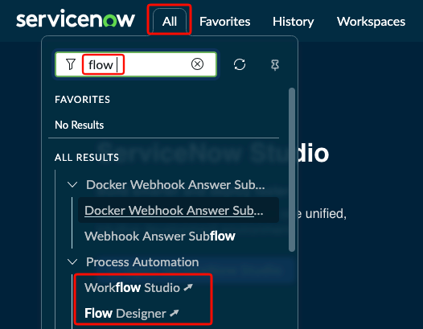
Once you click on either one, a new browser window will open and you'll see Workflow Studio.
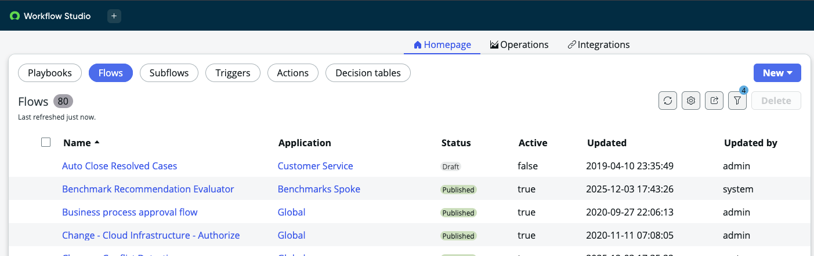
There are several exciting areas to play with once you're inside Flow Designer.
- Playbooks: Playbooks are like recipe cards for your helpdesk agents. They can offer an interactive experience that gets attached to a ticket. For more information on Playbooks, please check out our Playbooks page.
- Flows: Flows are an automation that has Triggers. These triggers will primarily be around records (a new record getting created, or an existing record getting modified). Once a trigger is met, a series of actions can be performed.
- Subflows: Subflows are more like repeatable functions in the programming world. While they function the exact same way when it comes to the Actions you can perform, they do not have Triggers like flows do. Subflows are designed to be called from within a Flow (or other parts of the platform) and they have pre-defined Inputs and Outputs. If you had a certain automation you wanted to be called from multiple flows, you could put it in a subflow instead.
- Triggers, Actions, and Decision Tables: They are outside of the scope for this article and come into play for mode advanced levels of Flow Designer.
Simple Demonstration⚓︎
Let's say you wanted an email to whoever a P1 Incident is assigned to. Something like this can be done in a matter of minutes with Flow Designer, no scripting is required.
After creating your new Flow, you'd need to first define the trigger. In our example, we want to know if a new one is created or if an existing one is updated so we'll pick Created or Updated
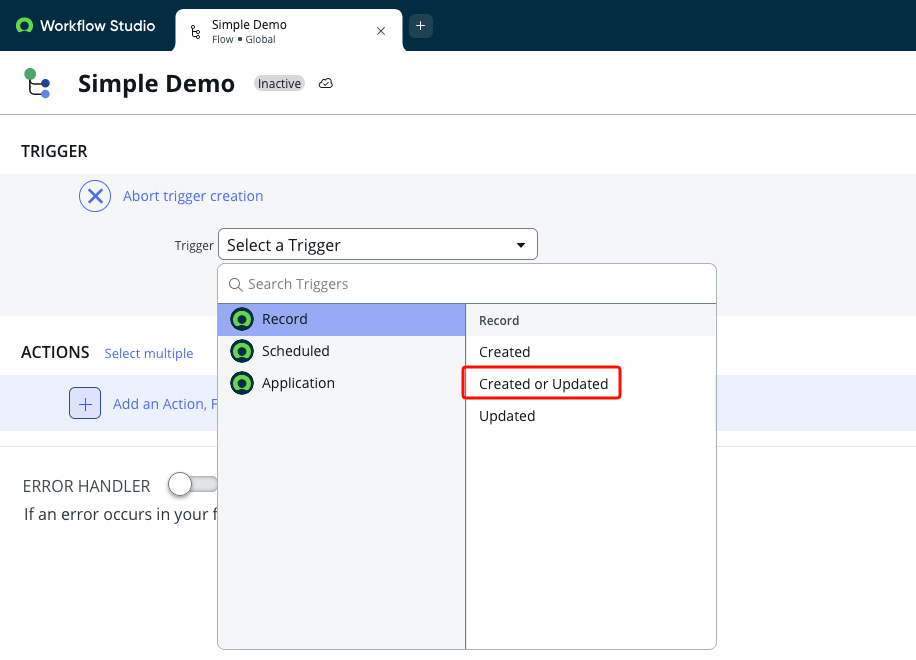
We then define the conditions for our trigger. In our example, we only care about Incidents that are P1 (Priority 1 - Critical) and only when the value for Assigned To changes.
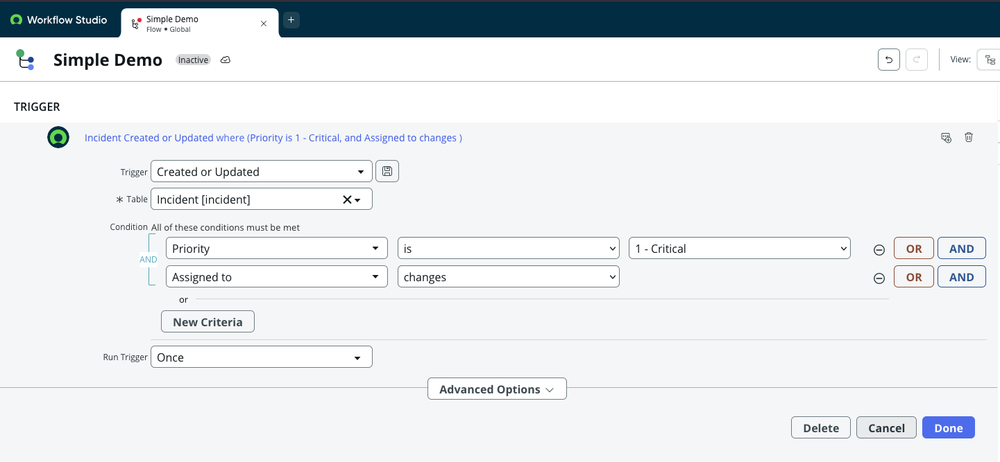
Next we need to define what action(s) should be taken once our trigger is met. Most of what you will be doing in the beginning can be found under Actions, you won't be using Flow Logic or Subflow right now.
Click on the + and then click on Action. Type in email in the filter box and select the Send Email action.
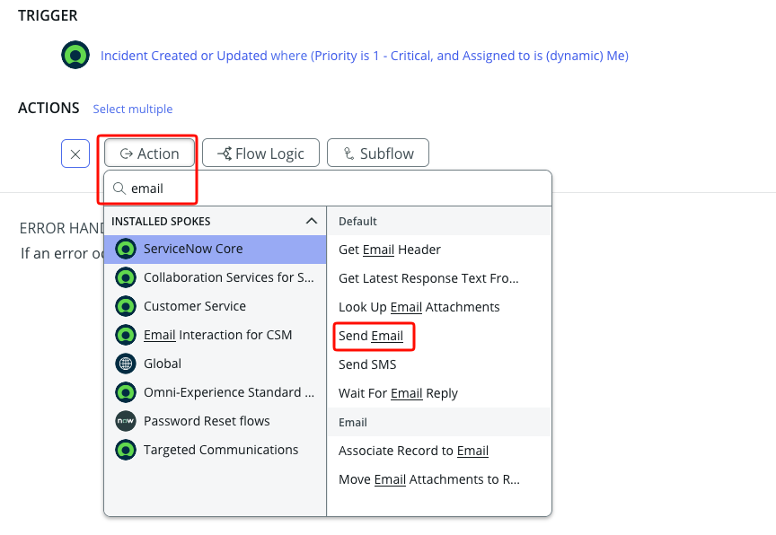
Once you click on that, you'll see fields you can fill in to help define the email we're going to send.
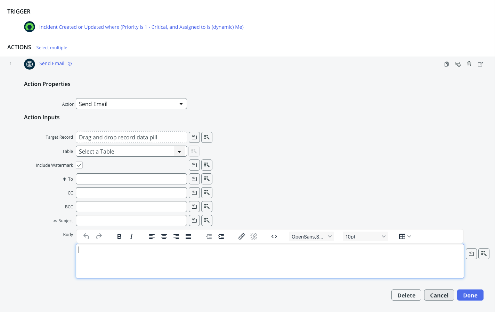
Since we're making this Dynamic we don't want to hard code things like email addresses. This is where dot walking comes in. For more information on dot walking, please see the dot walking section in our searching page.
On the right hand side of our page you'll see a bunch of Pills. The ones with a black arrow on the left side can be expanded to access all of the fields from that record.
We need to access the email address of whoever our trigger record is assigned to. In order to access this Pill we'll need to dot walk, starting at the Trigger Record
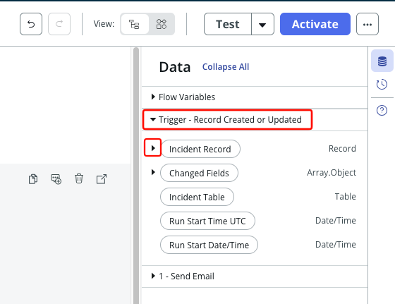
Info
The Trigger Record is a special section that always refers to the ticket that triggered our flow to run in the first place.
We are going to first expand the Incident Record and then we need to expand the reference to Assigned to.
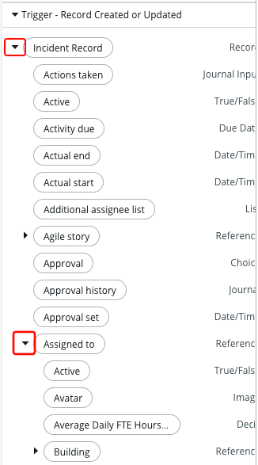
Once we have expanded the Assigned to pill we can scroll down and find the pill for Email. From there, we simply drag the email pill into the To: field of our email.
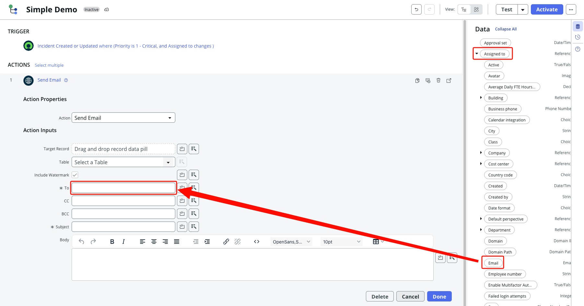
Once we drag it over to the To: field we can mouse over things and see the full breadcrumb trail for this value to confirm everything looks right.
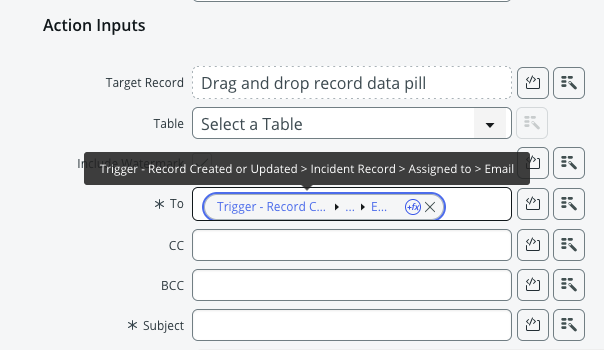
Now we want the subject and body to say something useful, and also reference some details of the ticket. We will use the same dot walking method to find the various pills we need. Some pills we'll want to find under the Incident Record include: - Short Description - Description - Number
We can also use HTML formatting to help make things a bit easier to read. In this example, I made our labels "Bold".
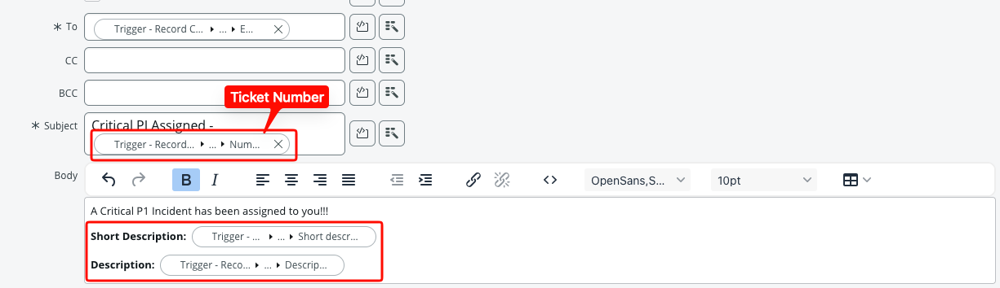
Now that we have finished setting up our email, it's time to test things out. We can use the Test button in our flow to help make sure our email looks the way we want.
Info
When using the Test button in Flow Designer, you can reference any Incident you like. It doesn't have to be a P1 Incident for our test as the Test button bypasses the trigger.
Once you run a test in Flow Designer, you'll be able to view the results. Click on the link once your test is finished and it will take you to the Execution Logs.
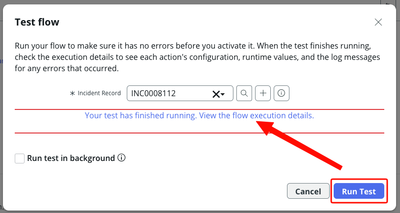
The Execution Logs are a vital place to help monitor how your flows are running, along with troubleshooting things when they fail. They will show you all of the various values and steps taken etc.
For now though, we can expand the body of our email and make sure it looks like what we want.
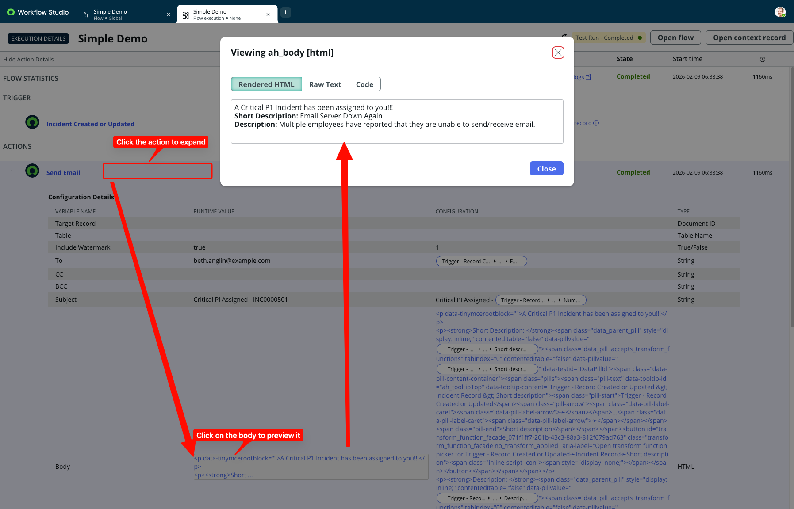